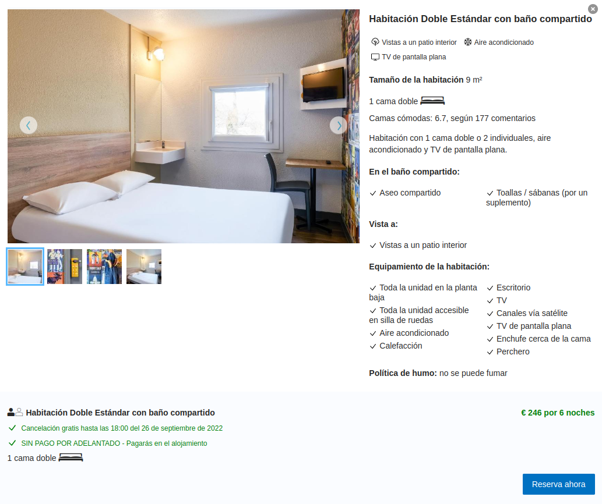

Viaje a Marsella
Dia 1
Viaje ida en cotxe
Gasto gasolina ida y vuelta, y estancia:165,75€
Estancia: HotelF1 Marseille Plan de Campagne N°1(TODO INCLUIDO)
Precio:246€

Dia 2
Visita el estadio del equipo de futbol Olympique de Marsella, y hacer tour.
Precio:18€

Dia 3
Tour en crucero de 4 horas por Le Calanques
Precio:35€

Dia 4
Visita las islas Frioul
Precio ferry:5,50€

Dia 5
Visita la Ciudad de los Papas, o el magnífico Aviñón
Precio entrada:10,50€

Dia 6
Visita a la Catedral de Marsella (Cathédrale La Major)
Entrada gratuita

Dia 7
Vuelta a casa

| Dia |
Gastos |
| Total |
480,75€ |
| Dia 1 |
411,75€ |
| Dia 2 |
18€ |
| Dia 3 |
35€ |
| Dia 4 |
5,50€ |
| Dia 5 |
10,50€ |
| Dia 6 |
0€ |
| Dia 7 |
0€ |